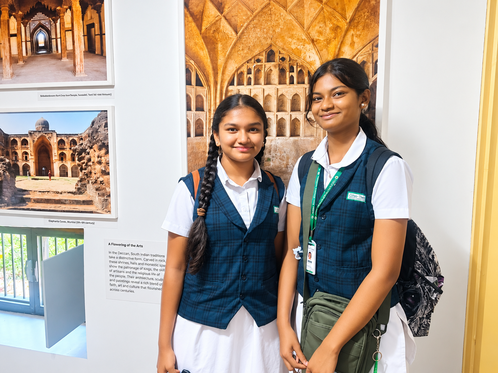
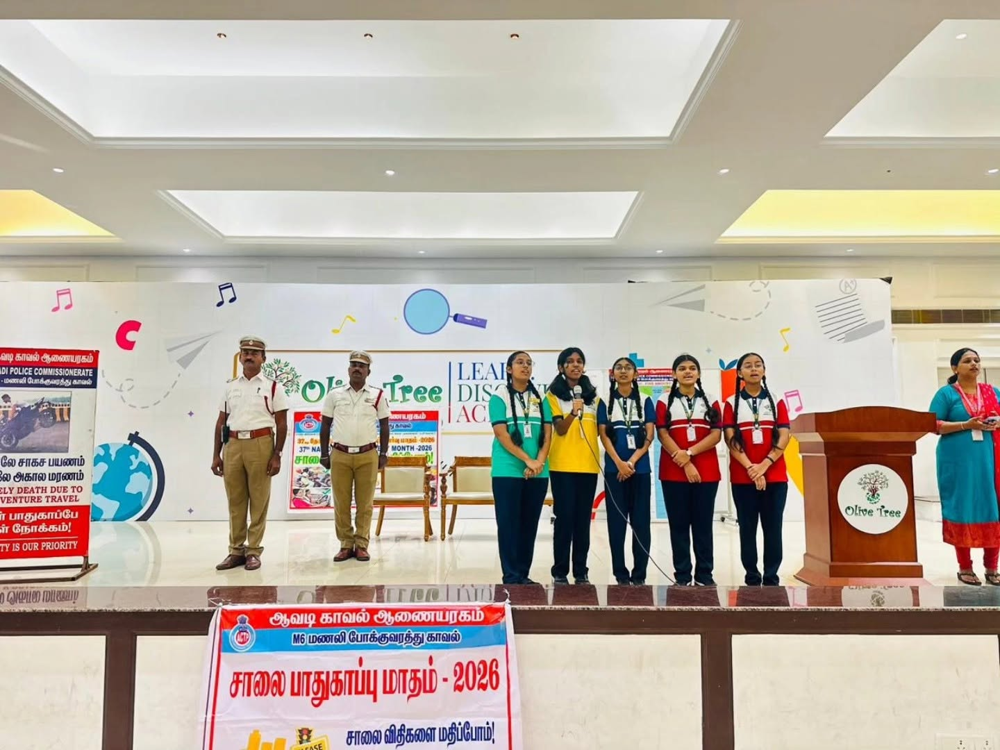
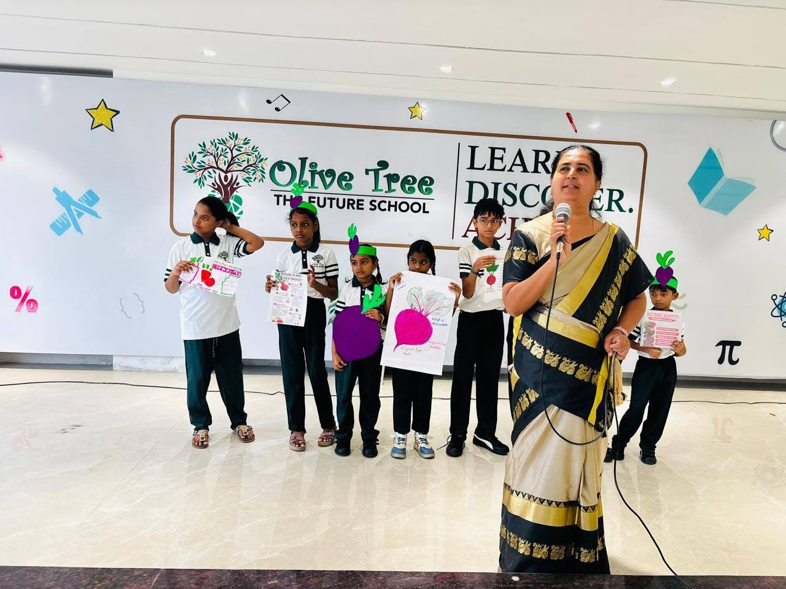
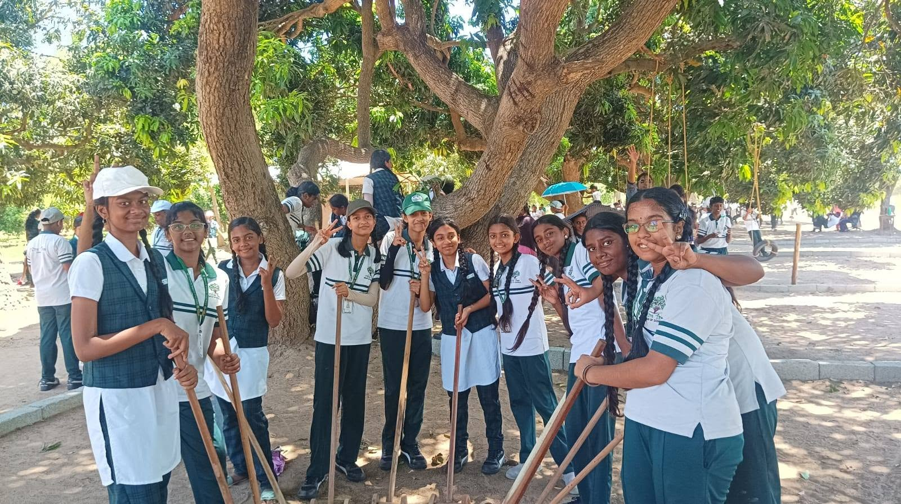

Grade 6
Students deepen their understanding of core subjects, develop organised study habits and begin applying concepts through guided projects, investigations and practical activities.


Middle school is an important stage in which students develop a deeper understanding of academic subjects and become more responsible for their learning. Our approach encourages thoughtful questions, logical reasoning and active participation.
Mathematics, science, social science, languages, computer education and environmental education help students understand concepts, explore ideas and make meaningful connections between subjects.
Projects, investigations, independent study and life-skills activities encourage self-management, collaboration, problem-solving and confidence.
Each grade helps students strengthen their subject understanding, develop independent study habits and take greater responsibility for their progress.
Students deepen their understanding of core subjects, develop organised study habits and begin applying concepts through guided projects, investigations and practical activities.
Students strengthen analytical thinking, independent research, subject application and personal responsibility through increasingly detailed tasks, projects and investigations.
A broad range of learning areas builds academic understanding, practical awareness, reasoning and essential skills for everyday life.

Mathematical concepts, logical exercises and problem-solving activities strengthen numerical understanding, reasoning and analytical thinking.

Observation, experimentation and investigations help students understand scientific concepts and develop curiosity about the natural world.

Learning about history, geography, communities and society develops perspective, awareness and an understanding of the world around us.

Reading, writing, speaking and listening activities develop communication, comprehension, vocabulary and expression across the languages offered.

Computer-based learning develops digital awareness, technology skills and the ability to use digital tools responsibly for learning and exploration.

Environmental learning develops awareness of nature, natural resources, sustainability and the importance of responsible choices.
Meaningful learning experiences encourage students to investigate ideas, think independently, work collaboratively and apply their knowledge.
Project-based activities encourage students to organise information, connect subject knowledge and present their findings clearly.
Guided investigations develop observation, questioning, evidence-based thinking and a deeper understanding of concepts.
Independent learning encourages students to plan tasks, organise resources, practise regularly and take ownership of their progress.
Thought-provoking activities help students examine ideas, evaluate possible solutions and explain their thinking with confidence.